007
Curious Find
好奇之物
007
好奇之物
A James Kent jug found at Barras Market becomes the sole muse. Six observational steps — sketch of first sight, directional line study, colour projection, faded-gold simulation, Chinese ink wet-stamping, and water-dip texture — feed object photography and a set of final looks that translate ceramic wear into cloth.
在巴拉斯市场购得的 James Kent 壶成为唯一缪斯。六个观察步骤——初见素描、线向研究、色彩投射、褪金模拟、水墨湿印与浸水肌理——通向物件摄影与成衣，将陶瓷磨损转译为布料。
Look

Look · Photography of object
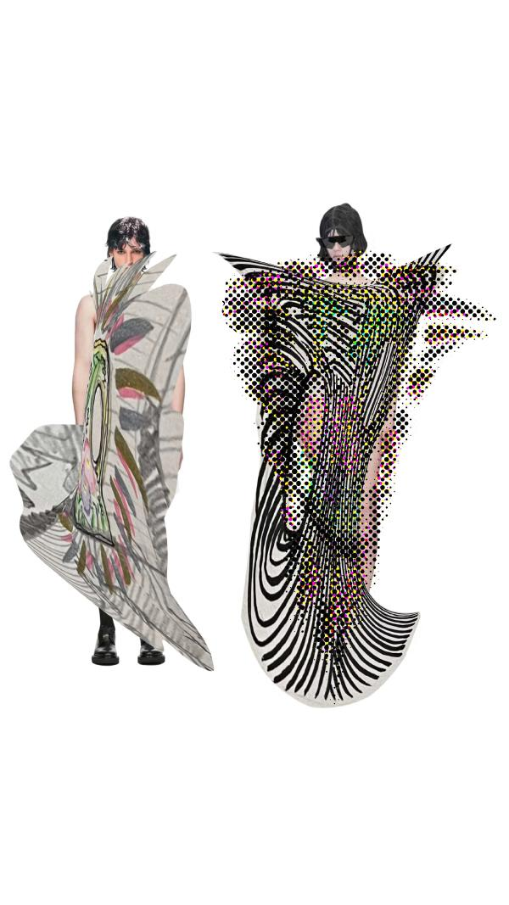
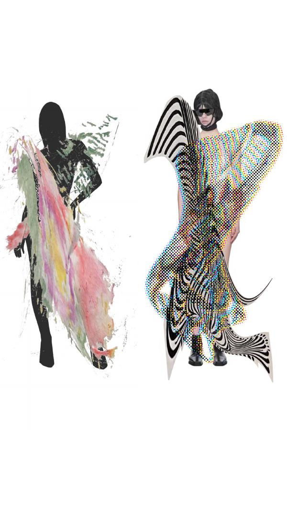
Look · Object-driven garments
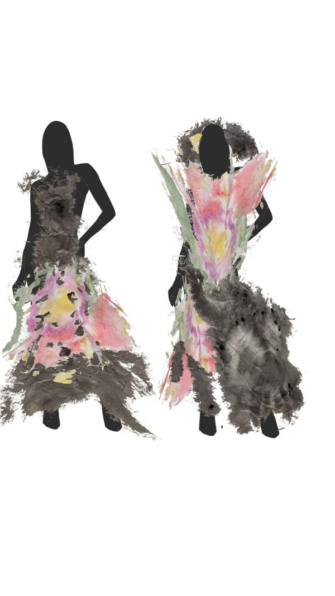
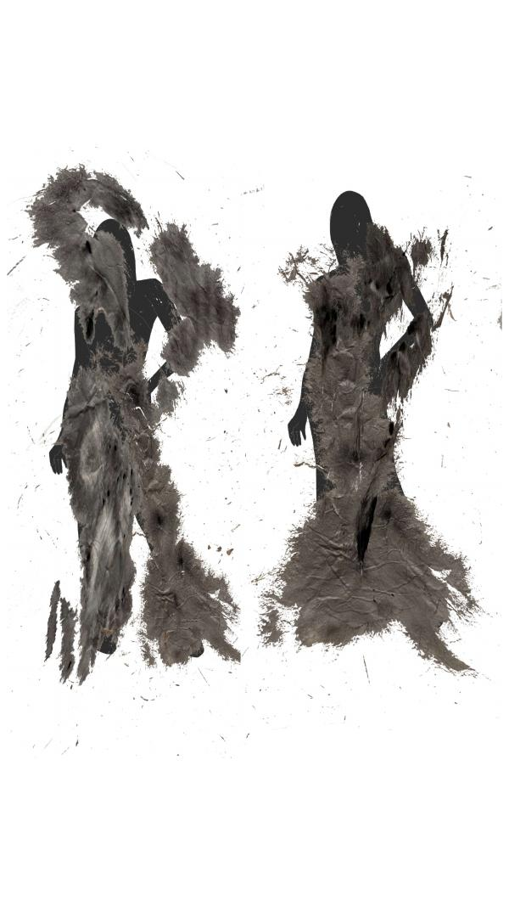
Look · Continued final looks
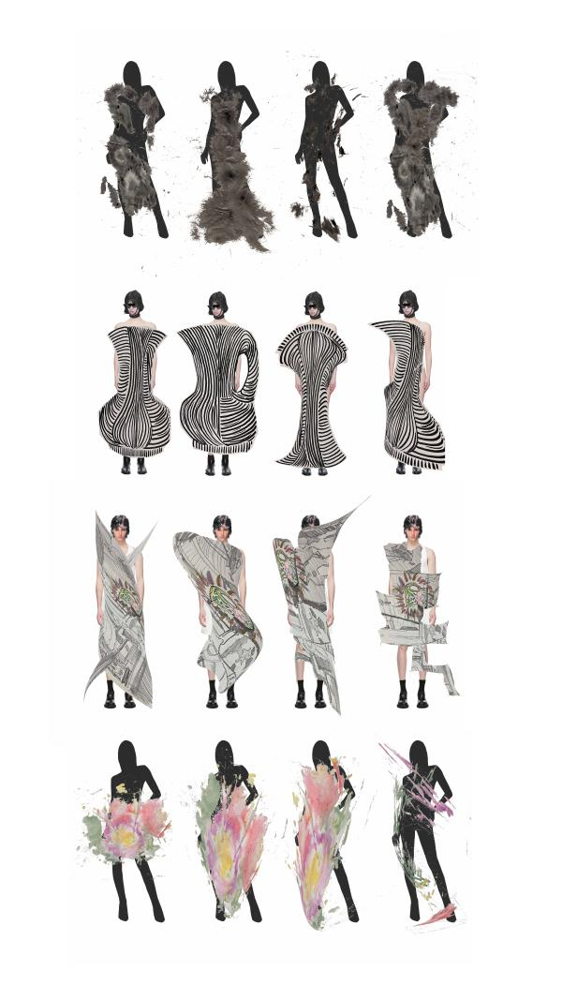
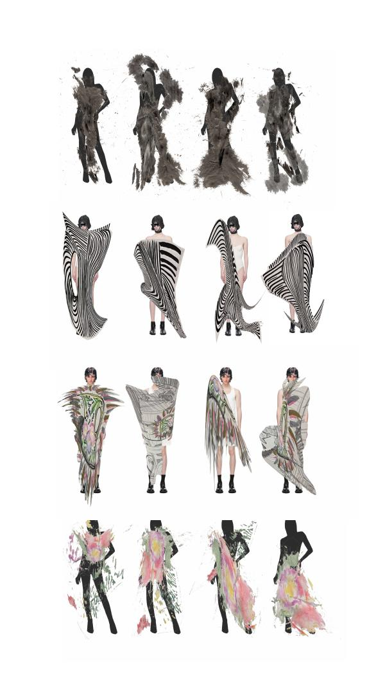
Look · Closing frames
Process
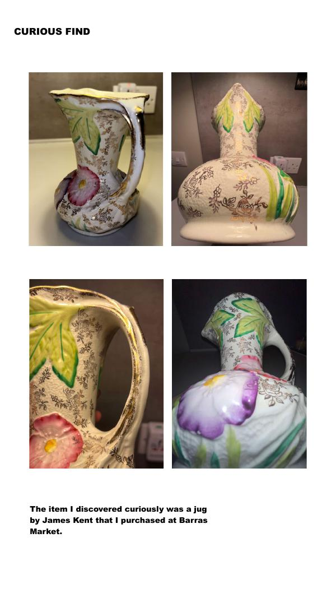
Process · James Kent jug, Barras Market
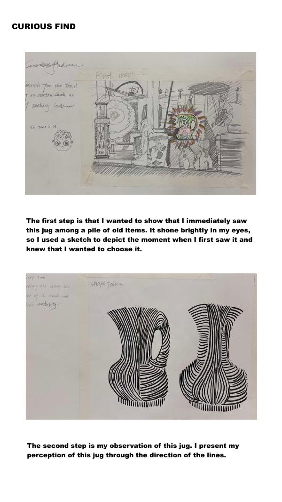
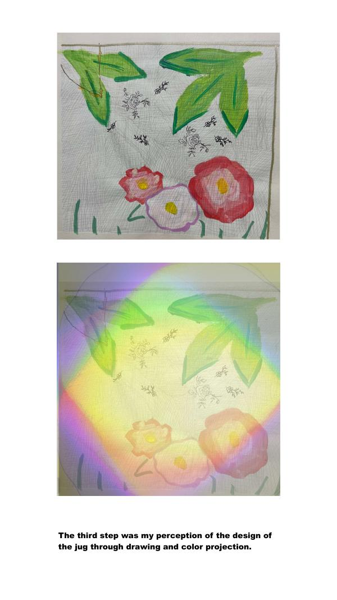
Process · Steps 1–3 · first sight, line, colour
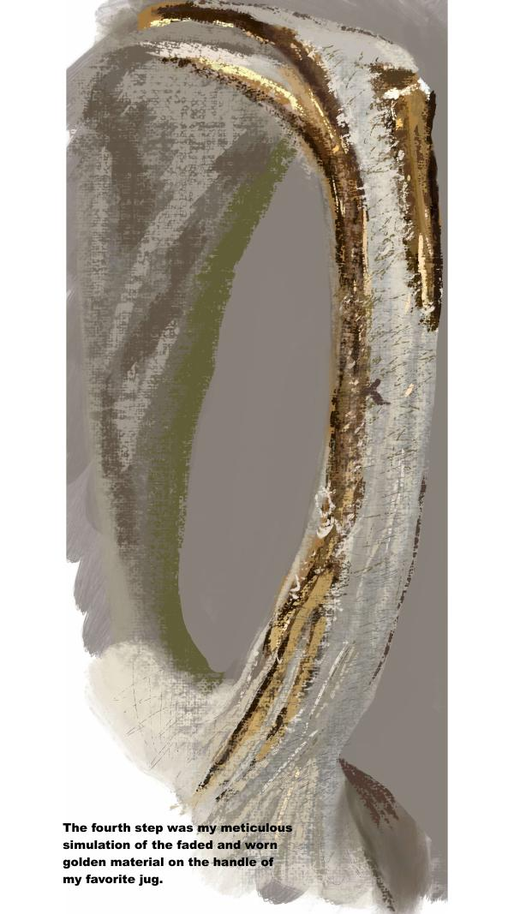
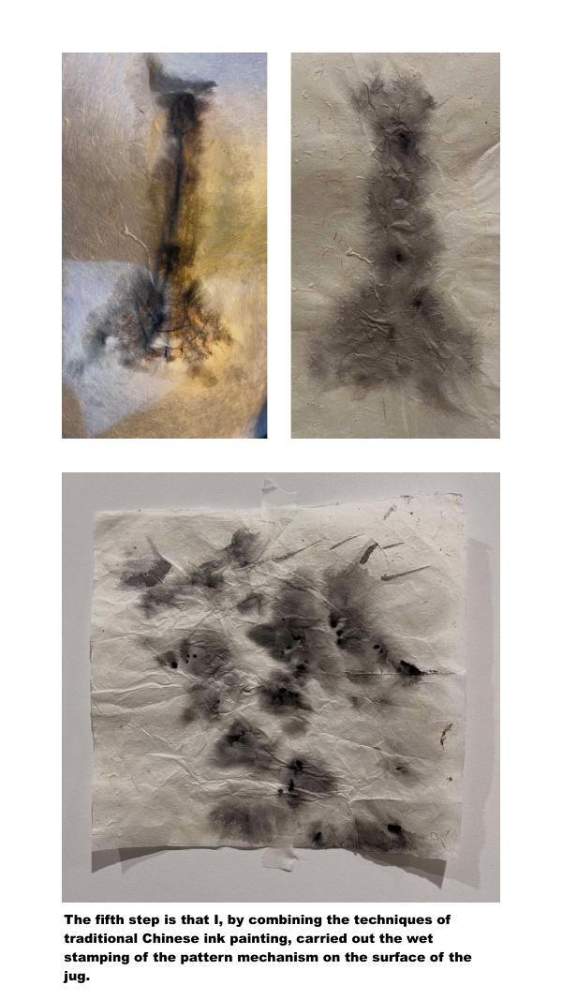
Process · Faded-gold simulation
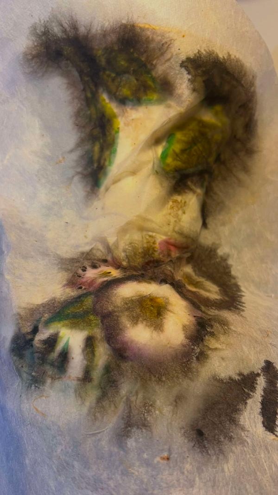
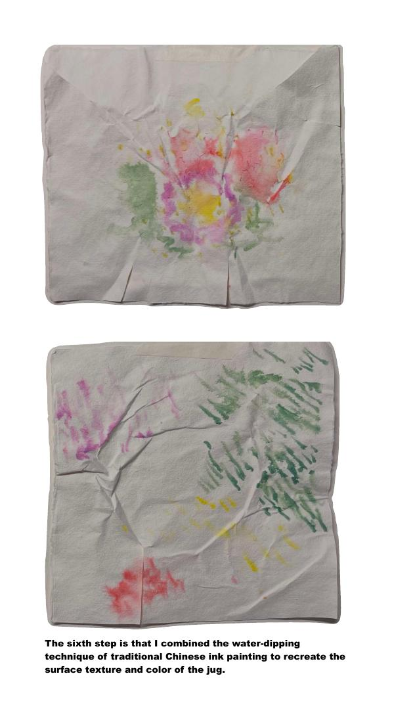
Process · Ink wet-stamp & water-dip
Detail
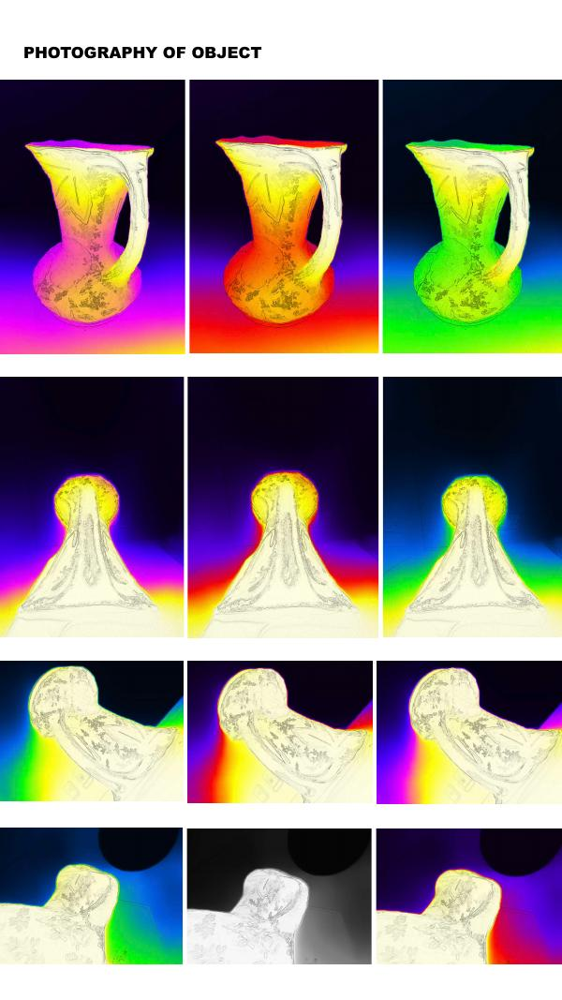
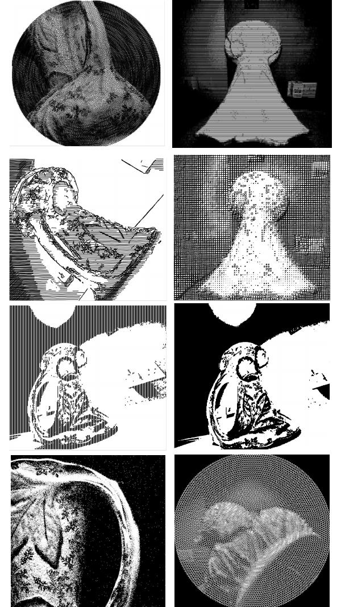
Detail · Object surface & material study